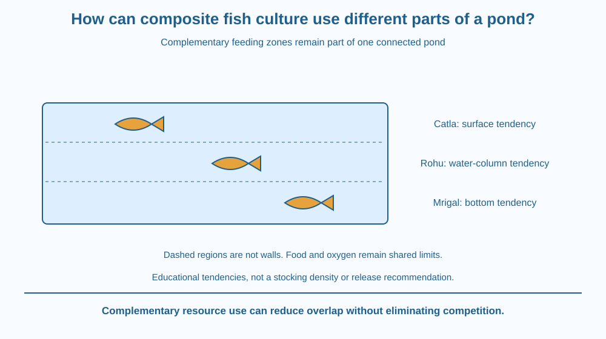

Explain how suitable fish with different feeding zones can share a managed pond. Distinguish complementary resource use from unlimited production. Connect surface, water-column and bottom feeding with a culture design while keeping oxygen, food and management limits visible.
A pond contains food resources in several regions, but one fish type may use only part of that range effectively. Adding a suitable fish with a different feeding pattern can use a resource that was less heavily used before.
Does more species automatically mean more useful harvest? No. The combination must be compatible, and all fish still share environmental limits. A pond does not acquire infinite oxygen or food because a diagram shows three layers.
The useful question is how the chosen animals' activities complement one another under managed conditions.
Composite fish culture combines suitable fish types in one managed system to use different resources and regions. It is an agricultural design, not simply any natural pond containing several species.
School examples commonly describe catla as a surface-oriented feeder, rohu as a water-column feeder and mrigal as a bottom-oriented feeder. These labels summarise useful tendencies; real feeding behaviour also depends on size, conditions and available food.
If the components use different resources, direct competition can be reduced relative to several types relying on exactly the same food in the same place. Reduced competition is not the same as no interaction or no limits.
The water column is connected. Dissolved oxygen, temperature, waste and water movement affect more than one feeding zone. A bottom feeder does not live in a separate sealed tank just because the diagram places it lower.
Food supply must support the planned population. Supplementary feeding and management can influence the system, but this lesson gives no real stocking ratio or ration. Those decisions require suitable local fisheries guidance.
Compatibility matters. A combination should not create unacceptable predation, interference or environmental stress. The presence of different feeding zones is one criterion, not a complete recipe for mixing arbitrary fish.
Reliable seed-stock identity and quality also matter to managed culture. A diagram labelled with three names cannot guarantee that a real collection of juveniles contains those species or is suitable for a site. Practical management requires more evidence than visual guessing.
The lesson differs from a natural food-chain explanation. Its main mechanism is deliberate complementary resource use within a production system. We do not claim a universal yield improvement percentage or recommend introducing fish into a wild water body.
Draw one pond with three resource regions, then assign model fish tendencies to each. Keep the region boundaries dashed in meaning: they are descriptive zones, not physical walls.
Add shared oxygen and water-quality arrows spanning all regions. This prevents the misleading picture that a problem in one zone cannot affect the rest.
Now give every fish the same food requirement in a counterexample. The benefit of different-zone labels weakens if their actual resource use overlaps strongly. The model tests why the particular combination matters rather than treating species count as the cause of success.
The SVG shows surface, column and bottom regions with catla, rohu and mrigal labels outside the water drawing. Arrows connect each with its simplified feeding tendency.
A shared-condition panel spans the whole pond and lists oxygen, food supply and compatibility. It deliberately avoids separate sealed compartments. The fish outlines are schematic, not identification images for stocking juveniles.
The caption states that the diagram is an educational resource-use model. It supplies neither a recommended population density nor a claim about the yield of a particular Indian pond.

Composite carp culture is part of inland aquaculture practice in India, with management adapted to local conditions and suitable species. A textbook summary introduces the logic but does not replace training or fisheries advice.
A school project can compare resource maps without keeping fish or modifying a pond. Releasing purchased or collected fish into natural water is not part of the lesson and can create ecological and welfare problems.
Managed production and conservation are different decision contexts. A species useful in one controlled system is not automatically appropriate for every wetland, stream or garden pond.
Use paper, three fish cards and a blue pencil. No live animals or feed is needed.
Keep the result qualitative. Card placement is not a real stocking recommendation, and the layer labels do not determine every moment of a fish's behaviour. Ask a partner to identify a common limit that affects the whole pond despite the different feeding positions.
Why could a system using several food zones still fail if dissolved oxygen becomes inadequate? Explain the shared environment rather than treating the zones as independent tanks.
Now imagine two named species whose actual food use overlaps under the current conditions. What additional evidence would be needed before calling them complementary? Labels are starting hypotheses about behaviour, not substitutes for observation and management knowledge.
What is the main resource-use idea in composite fish culture?
Answer: A — Suitable combinations can use resources that overlap less strongly.
Why do shared pond conditions still matter?
Answer: C — The resource zones remain part of one environment rather than independent tanks.
A paper pond has three species labels but no management evidence. What is justified?
Answer: B — Species tendencies are only part of the information required for a real culture plan.
Create a managed-pond resource map with feeding zones, shared limits and compatibility questions. Use the standard three-species example as a model, not a prescription.
State two pieces of local information needed before a real plan could be evaluated. Your conclusion should explain reduced overlap without promising no competition, infinite production or safe release of fish into any nearby water body.
Dividing resources among different users does not divide the environment into independent worlds. The fish may feed differently while still depending on the same oxygen supply and water conditions. A successful design combines complementary use with attention to those shared limits.
Composite fish culture can use complementary feeding tendencies, but the whole pond still shares limits of food, oxygen, compatibility and appropriate management.